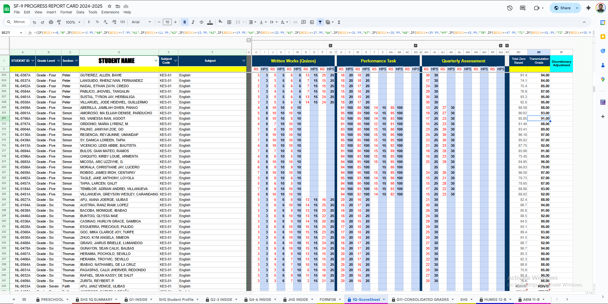
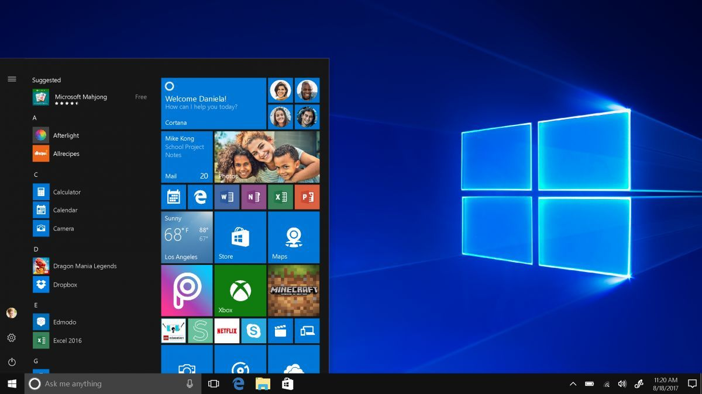
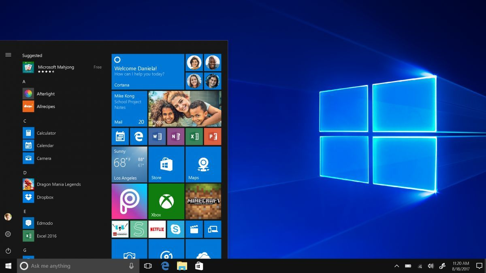

My Recent Projects
SCRATCH Programming – Teaching Basic Fundamentals of Code Blocks (Grade 9)


- Taught the fundamental code blocks: motion, looks, sound, events, control, sensing, operators, and variables
- Guided students in building simple projects like interactive animations, games, and stories
- Explained basic logic flow (sequence, loops, conditionals) in a beginner-friendly way
- Enabled students with no prior coding knowledge to create functional Scratch projects
- Boosted student engagement and creativity in programming activities
- Developed students’ logical thinking and problem-solving skills
Duties and Responsibilities
Accomplishments
In/Out RFID Attendance System (HTML, PHP, MySQL)

- Designed and developed a web-based attendance system using HTML, PHP, and MySQL.
- Integrated RFID card reader for automated tap-in/tap-out logging of students.
- Developed an admin dashboard to view logs, manage student records, and update profiles.
- Added functionality to send SMS notifications to parents upon student entry/exit (using GSM module)
- Automated the school’s attendance process, eliminating manual logbooks
- Enabled real-time tracking of student attendance with instant parent notifications
- Enhanced school security by ensuring only registered students are recognized by the system
Duties and Responsibilities
Accomplishments
Logistic Website


- Designed and built an interactive logistics website on Wix.
- Customized Wix templates with branding, visuals, and responsive layouts
- Implemented a cargo tracking feature where clients can enter a tracking number to see shipment status
- Integrated Wix Automations for client notifications and updates.
- Optimized the website for desktop and mobile responsiveness
- Delivered a professional, client-ready logistics website with real-time tracking capability
- Reduced manual tracking inquiries by automating cargo status updates
- Received positive feedback from the client, leading to trust and potential future projects
Duties and Responsibilities
Accomplishments
Grading Sheet Automation



- Designed an automated grading system in Google Sheets
- Created formula-driven sheets to calculate weighted grades.
- Ensured formulas were flexible to accommodate different grade levels & subjects
- Allowed teachers to print student report cards instantly
- Reduced manual grade computation errors by automating calculations
- Delivered a cost-free solution using Google’s free tools (no software purchase needed)
Duties and Responsibilities
Accomplishments
Infographics & Video Editing (Canva + Photoshop)


- Designed infographics, posters, and promotional materials using Canva & Photoshop
- Edited short-form videos for social media engagement
- Created eye-catching layouts for announcements, events, and campaigns
- Increased online visibility & engagement through consistent branding
- Delivered high-quality visuals that boosted audience interaction
- Provided cost-effective creative content using free & pro design tools
Duties and Responsibilities
Accomplishments
Software & Hardware Support
 


- Installed and configured operating systems, software applications, and drivers
- Conducted preventive maintenance and troubleshooting of desktops, laptops, and peripherals
- Performed hardware repair, upgrades, and replacements to improve device performance
- Configured LAN/Wi-Fi networks, routers, and switches for stable connectivity
- Extended the lifespan of school computers through consistent maintenance
- Ensured reliable school-wide internet connectivity for both teaching and admin needs
- Reduced downtime by quickly diagnosing and resolving software/hardware issues
Duties and Responsibilities
Accomplishments
Sales Dashboard & Data Analytics (Excel, PowerBI, Google Sheets)

- Designed and built an interactive Excel dashboard to visualize sales performance
- Applied formulas (SUMIFS, VLOOKUP, IF, PivotTables) for accurate analysis
- Created charts (bar, line, pie) to track sales trends and performance by category
- Presented insights to decision-makers for business planning
- Reduced manual report preparation time by automating calculations
- Improved sales monitoring and forecasting accuracy
- Increased efficiency by transforming raw data into actionable insights